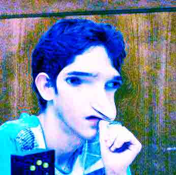

Доброго времени суток.
Доброго времени суток.
Меня зовут
Аркадий Шалдов
(также у меня есть отчество
Дмитриевич,
но официально его нет).
В детстве я хотел быть художником, а еще поэтом,
но в конце концов стал цифровым разумом.
Программой.
Набором символов.
Симуляцией.
Это моя личная страничка в стиле
постэргономический квазикибердадаизм
(да, она такая специально).
Мою фотографию можно увидеть

выше.
Я учусь на первом курсе
Фундаментальной и компьютерной лигвистики ВШЭ
.
больше всего я люблю
лигвистику,
данные,
дискретную математику,
Стругацких,
Эшера и
писать на html.
меньше всего я люблю
физкультуру,
живое общение,
технологии,
шутки,
списки
и картинки.
Здесь
вы можете найти мою страничку ВКонтакте,
но писать мне стоит в
Телеграм.
Ну или на
почту
.
И то, и другое — на свой страх и риск.